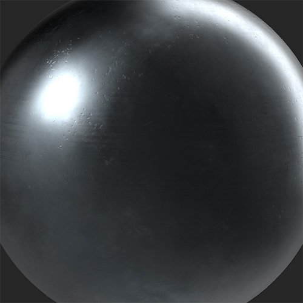
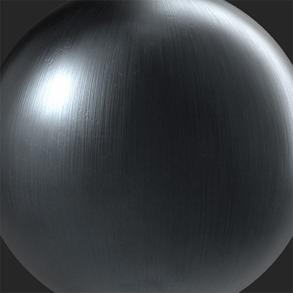

In: Wear and Finish
Convert your material into a metal with a number of finishes and styles.
A raw metal material is converted into a brushed metal surface with the Metal Finish filter.


Basic parameters
Mask
Advanced Parameters
There is currently a known bug where the Specular Level control can disappear if disabled with no control to re-enable it. If you lose the Specular Level control but need it back, you can use undo (ctrl + z or cmd + z on macOS) to undo disabling the toggle.